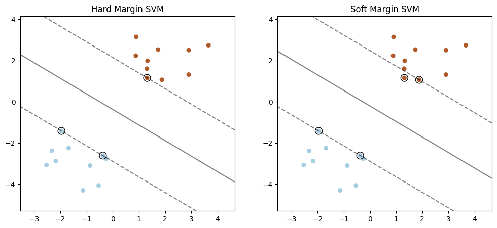
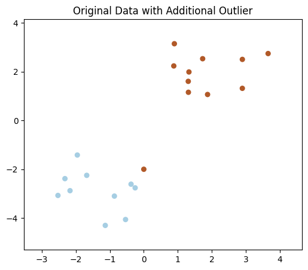
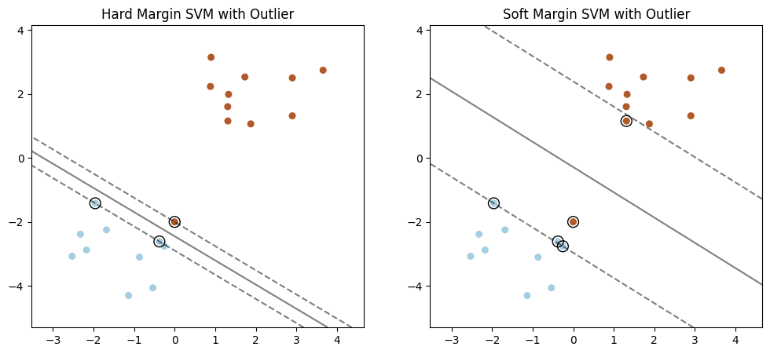
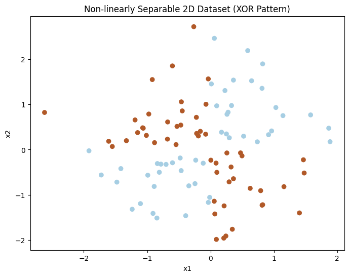
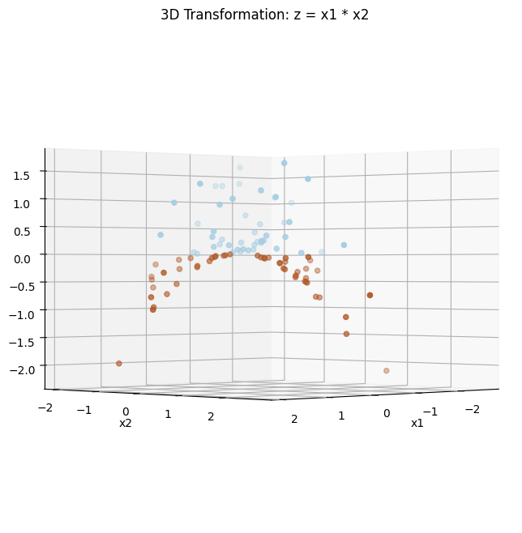

Exercises
Consider the two figures below:

The left figure shows a dataset with a hard margin SVM classifier, while the right figure shows the same dataset with a soft margin SVM classifier.
Now, imagine introducing an outlier close to the decision boundary but on the incorrect side of it.

Which classifier will better handle the outlier, and why?
Hard Margin SVM: Because it maximizes the margin, it will automatically adjust the decision boundary to accommodate the outlier, resulting in a better separation of classes.
Soft Margin SVM: Because it allows some misclassification, it will tolerate the outlier and not drastically change the decision boundary, leading to a more stable classification.
Hard Margin SVM: Because it doesn’t allow misclassification, it will better manage the outlier by pushing it to the correct side of the decision boundary.
Soft Margin SVM: Because it uses a nonlinear kernel, it will correctly classify the outlier without affecting the other data points.
Solution: The correct answer is B) Soft Margin SVM.
The soft margin SVM is designed to allow some misclassification or margin violations, which makes it more robust in the presence of outliers. When an outlier is introduced near the decision boundary but on the incorrect side, the soft margin SVM can tolerate this outlier without significantly altering the decision boundary. This is due to the introduction of slack variables \(\xi_i\) in the optimization problem, allowing some points to fall within the margin or even be misclassified: \[\min_{\mathbf{w}, b, \xi} \quad \frac{1}{2} \|\mathbf{w}\|^2 + C \sum_{i=1}^{N} \xi_i\] \[\text{subject to} \quad y_i (\mathbf{w}^T \mathbf{x}_i + b) \geq 1 - \xi_i, \quad \xi_i \geq 0, \quad \forall i\] The term \(C \sum_{i=1}^{N} \xi_i\) penalizes the slack variables, balancing the margin width and the tolerance for misclassified points. A smaller \(C\) allows for a wider margin and more tolerance for outliers, resulting in a more stable model in the presence of noise or misclassified points.
In contrast, the hard margin SVM does not allow any misclassification, so introducing an outlier forces the SVM to adjust the decision boundary to perfectly classify all points, including the outlier. This can lead to significant changes in the decision boundary, potentially resulting in overfitting and poor generalization.

For the next few questions, we’ll be looking at the kernel trick. Let’s consider the following dataset:

Notice that the data is not linearly separable. Now we can either use a nonlinear classifier, or we could introduce nonlinearity into the data input itself. What if we transform the inputs into a higher dimension space, where some of the dimensions introduce nonlinearity? For example,
\[\phi: \mathbb{R}^2 \rightarrow \mathbb{R}^3 \quad \text{with} \quad (x,y) \mapsto (x,y,xy)\]

Now we can fit a linear boundary (a plane) to separate the data. Great, but what if we start in a higher dimension \(d\)?
Given a \(d\)-dimensional input, how many possible nonlinear interaction terms can be introduced in the transformation?
\(2^d\)
\(d^2\)
\(\binom{d}{2}\)
\(d \times (d-1)\)
Solution: The correct answer is \(\textbf{a) } 2^d\).
A subset-product feature is formed by choosing any subset of the \(d\) input dimensions and multiplying the chosen coordinates together. For each dimension, we have two choices: include it or exclude it from the product. Therefore, the total number of possible subset-products is \(2^d\) (including the empty subset, which corresponds to the constant feature \(1\)). This exponential growth is one reason explicit feature expansion becomes infeasible in high dimensions, and motivates using kernels to compute these inner products implicitly.
But do we actually need to compute the transformations? Recall the loss function we derived from the original optimization problem:
\[L = -\frac{1}{2}\sum_{i=1}^{N} \sum_{j=1}^{N} \alpha_i \alpha_j y_i y_j \mathbf{x^T_i} \mathbf{x_j} + \sum_{i=1}^{N} \alpha_i\]
It turns out that if we modify the original optimization problem to:
\[\min_{\mathbf{w}, b} \quad \frac{1}{2} \|\mathbf{w}\|^2 \\ \] \[\text{subject to} \quad y_i (\mathbf{w}^T \phi(\mathbf{x}_i) + b) - 1 \geq 0, \quad \forall i\]
Then the resulting dual problem and corresponding loss function involve the kernel \(K(\mathbf{x}_i, \mathbf{x}_j) = \phi(\mathbf{x}_i)^T \phi(\mathbf{x}_j)\):
\[L = -\frac{1}{2} \sum_{i=1}^{N} \sum_{j=1}^{N} \alpha_i \alpha_j y_i y_j K(\mathbf{x}_i, \mathbf{x}_j) + \sum_{i=1}^{N} \alpha_i\]
So all we care about computing is the kernel \(K(\mathbf{x}_i,\mathbf{x}_j)\). As an example, what is the kernel corresponding to the following input mapping (\(\phi:\mathbb{R}^2\rightarrow\mathbb{R}^6\))?
\[\phi(\mathbf{x}) = (x_1^2, \sqrt{2}x_1x_2, x_2^2, \sqrt{2}x_1, \sqrt{2}x_2, 1)\]
\(K(\mathbf{x}_i,\mathbf{x}_j) = (\mathbf{x}_i^T \mathbf{x}_j)^2\)
\(K(\mathbf{x}_i,\mathbf{x}_j) = (\mathbf{x}_i^T \mathbf{x}_j + 1)^2\)
\(K(\mathbf{x}_i,\mathbf{x}_j) = \sqrt{(\mathbf{x}_i^T \mathbf{x}_j + 1)}\)
\(K(\mathbf{x}_i,\mathbf{x}_j) = (\mathbf{x}_i^T \mathbf{x}_j + 1)\)
Solution: The correct answer is \(\textbf{b) } K(\mathbf{x}_i,\mathbf{x}_j) = (\mathbf{x}_i^T \mathbf{x}_j + 1)^2\).
To see why this is true, consider the expansion: \[\begin{aligned} \phi(\mathbf{x}_i)^T \phi(\mathbf{x}_j) &= x_{i1}^2x_{j1}^2 + \sqrt{2}x_{i1}x_{i2}\sqrt{2}x_{j1}x_{j2} + x_{i2}^2x_{j2}^2 + \sqrt{2}x_{i1}\sqrt{2}x_{j1} + \sqrt{2}x_{i2}\sqrt{2}x_{j2} + 1 \\ &= x_{i1}^2x_{j1}^2 + 2x_{i1}x_{i2}x_{j1}x_{j2} + x_{i2}^2x_{j2}^2 + 2x_{i1}x_{j1} + 2x_{i2}x_{j2} + 1 \\ &= (x_{i1}x_{j1} + x_{i2}x_{j2} + 1)^2 \\ &= (\mathbf{x}_i^T \mathbf{x}_j + 1)^2\end{aligned}\]
Notice that \(K(\mathbf{x}_i, \mathbf{x}_j)\) is much easier to compute directly than computing the dot product of the transformed vectors separately.
(Conceptual) Logistic Regression and a linear SVM can both produce linear decision boundaries of the form \(\mathbf{w}^T\mathbf{x}+b=0\). What is the main difference in what they optimize?
Logistic Regression maximizes the geometric margin; SVM maximizes likelihood.
Logistic Regression minimizes cross-entropy (negative log-likelihood); SVM maximizes the margin (equivalently minimizes \(\|\mathbf{w}\|\) with margin constraints).
Logistic Regression requires kernels; SVM cannot use kernels.
Logistic Regression only works for separable data; SVM works for all data.
Solution: The correct answer is B).
Logistic Regression fits probabilities by minimizing cross-entropy (negative log-likelihood). Hard/soft-margin SVMs instead choose a separator with a large margin (and with soft margin, trade off violations via \(C\)).
(Applied) You are training a linear SVM on a real dataset with a few mislabeled points (label noise). As you increase \(C\) from very small to very large, what behavior do you expect, and why?
Increasing \(C\) typically increases the margin width and improves robustness to noise.
Increasing \(C\) typically decreases the margin width and makes the classifier fit the training data more tightly, which can overfit noisy labels.
Increasing \(C\) has no effect because SVMs ignore misclassified points.
Increasing \(C\) forces the use of a nonlinear kernel, which always improves generalization.
Solution: The correct answer is B).
A larger \(C\) penalizes slack variables more, so the optimizer prefers fewer margin violations even if that means a narrower margin and a more complex boundary in feature space. With label noise/outliers, this can reduce robustness and hurt test performance.